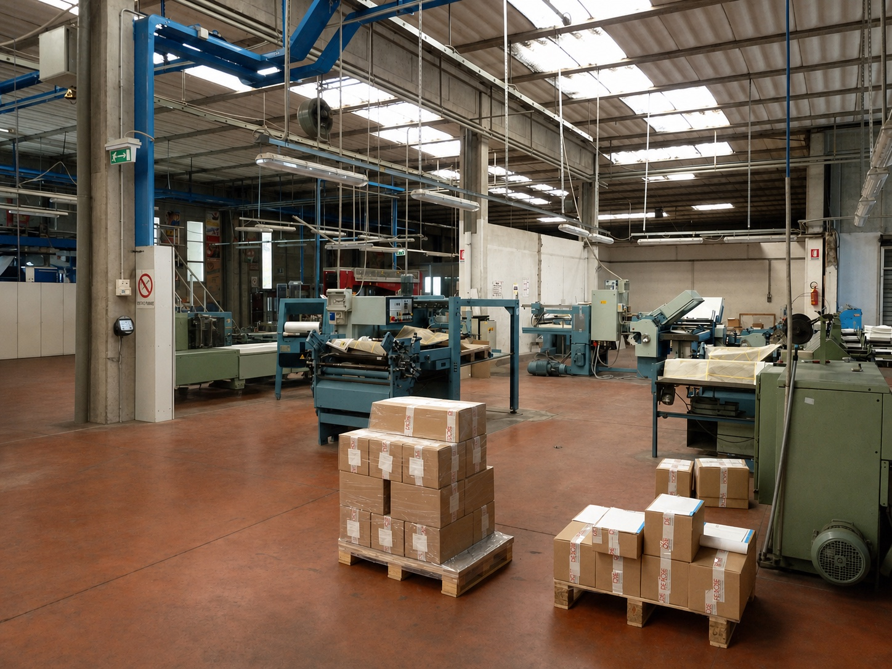
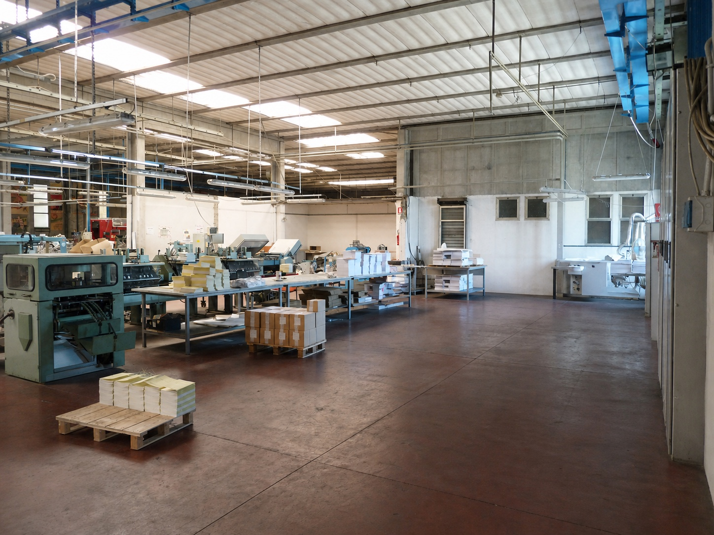
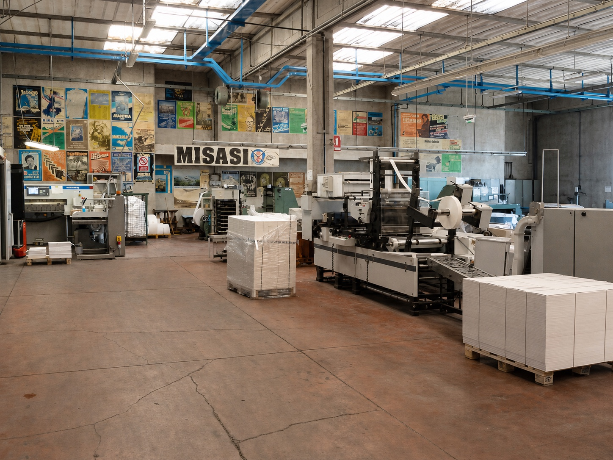
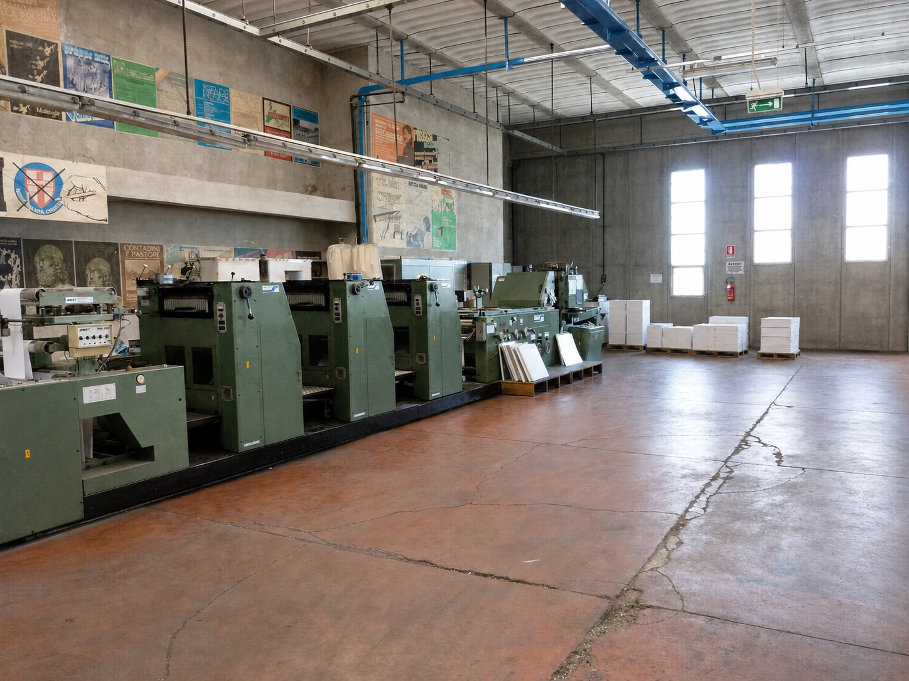
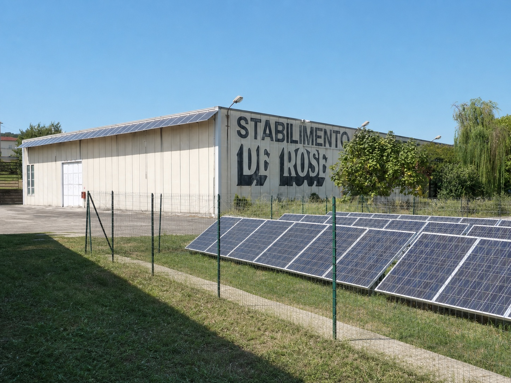
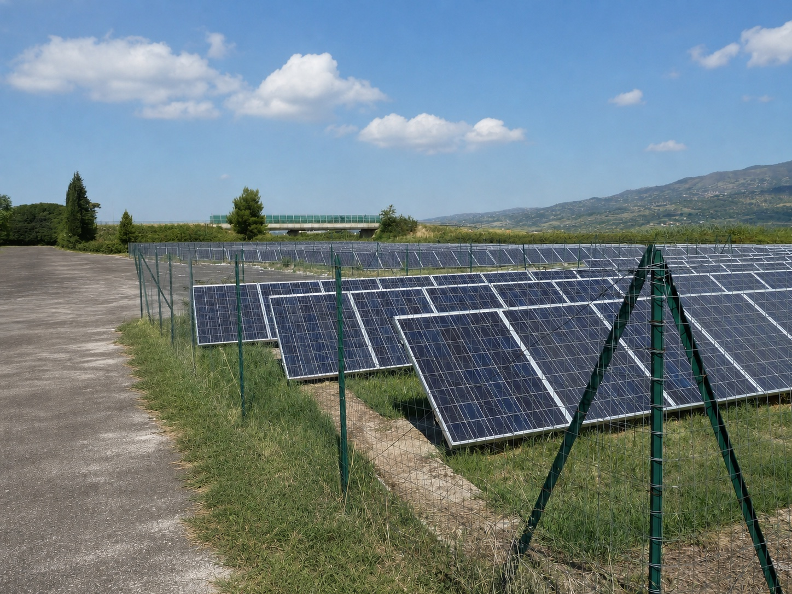

Fondazione · 1950
Dalla bottega tipografica a un'impresa della stampa.
Umberto De Rose senior unisce sapere tecnico e iniziativa imprenditoriale, ponendo le basi della continuità familiare.
L'azienda · Dal 1950
Le origini
Nel 1950 Umberto De Rose senior fonda la Tipografia De Rose a Cosenza. In un settore ancora legato in larga parte alla dimensione artigianale, introduce un'impostazione più organizzata del lavoro e investe nelle tecnologie capaci di dare continuità, precisione e maggiore capacità alla produzione.
Il primo nucleo nasce nel cuore della città e lavora per l'editoria, le istituzioni e la vita civile: libri, periodici, manifesti, studi e documenti amministrativi. Da quella stagione prende forma una cultura del mestiere fondata sulla conoscenza dei caratteri, della carta e dei processi; un patrimonio trasmesso, aggiornato e ampliato da tre generazioni.
Fondazione · 1950
Umberto De Rose senior unisce sapere tecnico e iniziativa imprenditoriale, ponendo le basi della continuità familiare.
Dall'artigianato alla prima struttura d'impresa
Prima generazione
Umberto De Rose senior comprende che il futuro della stampa richiede il superamento del solo lavoro manuale. Le macchine piane semiautomatiche e la cura dei caratteri mobili permettono di aumentare le tirature senza rinunciare alla qualità, trasformando progressivamente il laboratorio in una realtà produttiva strutturata.
La tipografia diventa un interlocutore stabile per autori, editori, enti pubblici, istituzioni religiose e organizzazioni. Il marchio impresso su libri, monografie, riviste e atti istituzionali accompagna studi storici, geografici e antropologici, pubblicazioni dedicate anche a Gioacchino da Fiore, delibere amministrative e relazioni delle Camere di Commercio. Una presenza costruita sul rigore esecutivo e sulla capacità di sostenere la circolazione della conoscenza.
È in questa fase che si definisce il principio destinato a rimanere costante: la tecnologia cambia, ma il controllo del lavoro resta una responsabilità diretta dell'impresa.

Le tappe
Un percorso continuo di specializzazione, apertura dei mercati e responsabilità industriale.
Umberto De Rose senior avvia la tipografia a Cosenza e ne definisce la prima vocazione editoriale e istituzionale.
L'attività familiare viene consolidata e affianca progressivamente all'editoria nuove produzioni commerciali e istituzionali.
L'impresa interpreta una domanda in trasformazione e amplia la propria specializzazione.
I caratteri di piombo lasciano spazio alle tecnologie offset, con un salto nella continuità e nella capacità produttiva.
La crescita tecnologica e organizzativa accompagna il trasferimento nell'area industriale di Montalto Uffugo.
I mercati di sbocco si ampliano e l'impresa lavora per organizzazioni complesse in diversi settori.
Un nuovo ciclo di investimenti in macchinari innovativi accompagna la transizione verso il modello Industria 4.0.


Il filo conduttore
Intuito, coraggio, umiltà e lungimiranza diventano metodo: la reputazione si costruisce nella capacità di rispondere del risultato.
Continuità familiare e apertura del mercato
Seconda generazione
Gaetano De Rose raccoglie l'eredità tecnica e imprenditoriale del padre e consolida il ruolo della tipografia nella produzione editoriale e istituzionale. La continuità non coincide con l'immobilità: nuove esigenze di comunicazione richiedono processi più rapidi, maggiore versatilità e una capacità produttiva diversa.
Intorno alla metà degli anni Settanta l'impresa entra nella litografia commerciale e pubblicitaria e accompagna il passaggio dai caratteri di piombo alle tecnologie offset. La scelta amplia il campo delle commesse e rafforza un modello nel quale investimento, competenza e affidabilità procedono insieme.
All'attività imprenditoriale Gaetano affianca anche un servizio nelle istituzioni cittadine, ricoprendo nei primi anni Settanta l'incarico di vicesindaco di Cosenza. Il passaggio testimonia un rapporto diretto con la comunità e con la vita amministrativa della città.

Terza generazione
Dalla metà degli anni Novanta Umberto De Rose assume la guida dell'azienda e accelera l'evoluzione tecnologica e organizzativa. La produzione si trasferisce nell'area industriale di Montalto Uffugo, dove spazi, impianti e competenze vengono configurati per gestire commesse articolate e cicli produttivi integrati.
Negli anni in cui i quotidiani cartacei erano ancora un rito condiviso e capillare, lo stabilimento ha attraversato anche una stagione dedicata alla stampa giornalistica con rotative. È un capitolo storico oggi concluso, significativo per comprendere la capacità dell'impresa di misurarsi con tempi serrati, grandi volumi e continuità produttiva.
All'inizio degli anni Duemila i mercati di sbocco si ampliano su scala nazionale. De Rose lavora per istituzioni e imprese nei settori assicurativo, energetico, sanitario, postale e dei trasporti, rafforzando procedure, controllo qualità e capacità di coordinamento.
L'esperienza industriale si estende anche alla rappresentanza economica e alle istituzioni. Nel corso degli anni Umberto De Rose ha ricoperto le cariche di presidente dei Giovani Industriali di Cosenza, presidente dei Giovani Industriali della Calabria, presidente di Confindustria Calabria, presidente di Assindustria Cosenza e presidente di Fincalabra, oltre a essere stato consigliere comunale. Un percorso che affianca alla guida d'impresa una conoscenza diretta dei sistemi produttivi, associativi e amministrativi.
Commesse e relazioni
Nella fase di espansione, lo stabilimento diventa fornitore fiduciario di istituzioni, aziende e organizzazioni complesse.
Organizzazione
La struttura è coordinata da una direzione con esperienza ultratrentennale nel settore della stampa; i responsabili delle aree amministrativa, produttiva e controllo qualità operano in relazione continua con la direzione.
Area produzione
Il responsabile coordina i servizi delle aree produttive fondamentali, articolate in più unità operative. Idea, analizza e sviluppa progetti complessi, con particolare attenzione alla scelta delle tecnologie e all'impiego delle risorse aziendali; pianifica inoltre il processo produttivo e la sua organizzazione.
Area amministrativa
Il responsabile coordina e controlla l'area amministrativa e finanziaria, garantisce gli adempimenti contabili previsti dalla normativa civile e fiscale, predispone bilanci, budget e consuntivi e gestisce la contabilità industriale.
Controllo qualità
Il responsabile supporta l'area produzione nella gestione della commessa in ogni fase, verificando la conformità a qualità, quantità e tempi richiesti dal cliente. Coordina inoltre le attività aziendali affinché rispondano ai requisiti del sistema di qualità.
Struttura produttiva
La produzione si sviluppa in due moderni opifici industriali. Dalla progettazione grafica al prodotto finito, ogni fase è organizzata per mantenere elevato lo standard qualitativo.


Il percorso organizzativo ha incluso la certificazione secondo lo standard internazionale UNI EN ISO 9001:2008 per le attività di prestampa, stampa e allestimento, riferimento vigente nella fase descritta dalla presentazione storica.
Qualità e controllo oggiIl metodo De Rose
Conoscere materiali, tecnologie e vincoli per scegliere il processo corretto prima di andare in macchina.
Controllare le fasi, le specifiche e il risultato con un metodo ripetibile e condiviso.
Gestire tempi e responsabilità produttive con chiarezza, dalla conferma del progetto alla consegna.
Filiera italiana
L'adesione ad Assografici colloca De Rose nel sistema italiano delle imprese grafiche e cartotecniche. Una relazione che rafforza il confronto professionale e la cultura di settore.
Qualità e controllo